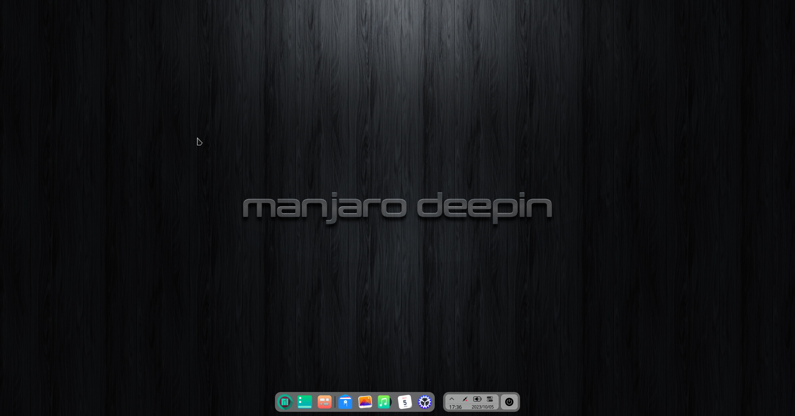
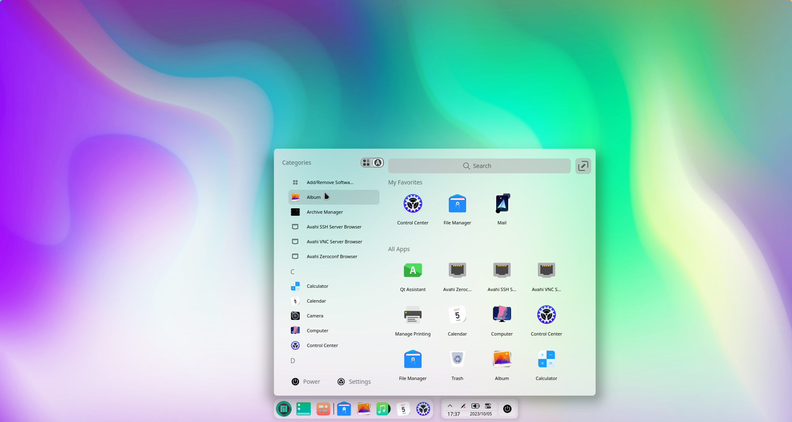
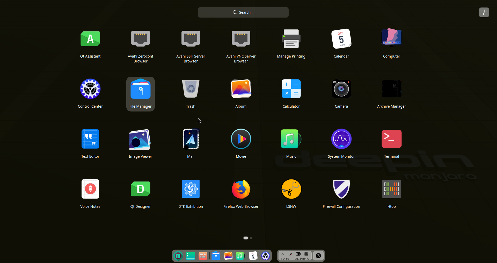

|
|
 Manjaro Deepin был общественным изданием Manjaro Linux, предоставляющим готовый к использованию опыт с рабочим столом Deepin на основе всего лучшего, что предлагают дистрибутивы Arch Linux и Manjaro Linux. Установка легкая с помощью установщика Calamares, который имеет графический и дружелюбный интерфейс.   |